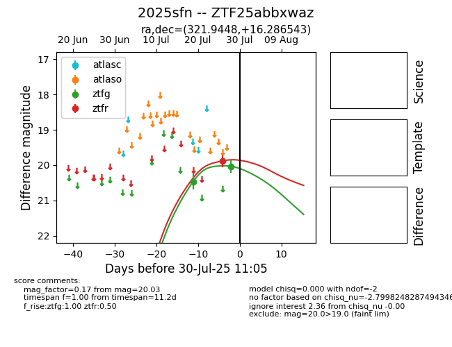

Target 2025sfn at 2025-08-06 17:27, see:
FINK: fink-portal.org/2025sfn
Lasair: lasair-ztf.lsst.ac.uk/objects/2025sfn
ALeRCE: alerce.online/object/2025sfn
TNS: wis-tns.org/object/2025sfn
YSE: ziggy.ucolick.org/yse/transient_detail/2025sfn
alt names
ZTF25abbxwaz (ztf,fink)
2025sfn (tns,yse)
coordinates:
equatorial (ra, dec) = (321.9448,+16.28654)
galactic (l, b) = (68.1298,-24.25026)
photometry
last ztfg=19.89, ztfr=19.75
3 ztfg, 2 ztfr detections
